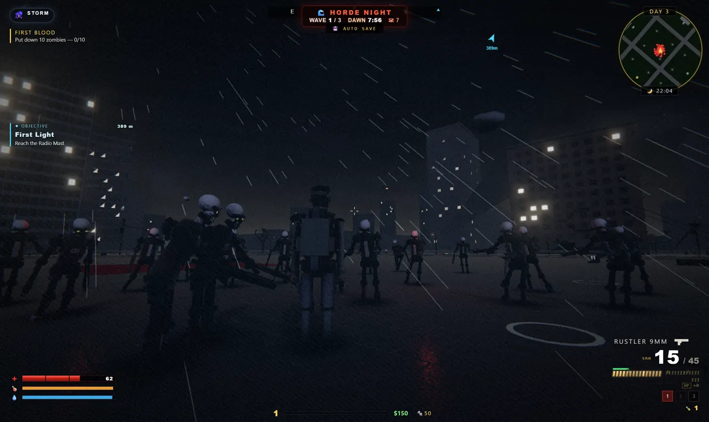

Deadlight City
An offline open-world survival RPG set in one 4 km by 4 km city, with zombies, aliens and demons. It runs in a browser tab or as a portable Windows app, with no game engine underneath: plain JavaScript and three.js.

01 · The order
What it is.
My first shot at the game that became Multi-Apocalypse: one city, and more than one kind of apocalypse in it.
It plays offline, in a browser tab or as a portable Windows app.
02 · Prep
No engine, and almost no asset files.
There's no game engine under it. The city is generated from a seed, and the characters, animation, sound effects and music are all generated at runtime instead of shipped as files.
JavaScript (ES modules) · three.js · Electron · Node · Blender Python
03 · The cook
The hard parts.
- City
- 4 × 4 km
- Modules
- 61
- Quality presets
- 4
- A city that streams. The city is generated from a seed and streamed in chunks, so a save only stores what you changed.
- A rendering stack built by hand. Procedural sky, bloom, ambient occlusion, depth of field and four quality presets.
- Gates before features. Automated checks confirm that 61 modules have no circular imports, that old saves still load, and that the packaged app boots.
04 · On the pass
Stopped as a prototype.
Deadlight City runs and is playable, but frame pacing and visual polish were never finished. There's no public build, and the source is private. The idea carried on into Multi-Apocalypse.